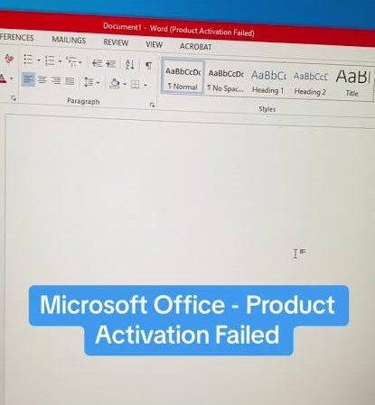

Windows repair and software installation
We fix Windows errors, install Windows and the programs you need, remove viruses and speed up slow computers.
Order a repairCall usWindows OS fixing and software installation
Bring your laptop or desktop, or send us the details first. We look at the fault, tell you the price, and start once you agree. Our flyer lists what we cover.
- Windows 10, Windows 11 and other versions
- Errors, boot problems and system crashes
- Office, browsers, drivers, antivirus and media tools
- Slow computers, viruses and general IT support
Computer services
Each Order button opens the order page with the service already chosen.
Windows repair
We find the fault and fix it, usually without wiping your files.
- Boot failures and black screens
- Blue screens and system crashes
- Failed updates and corrupted Windows
- Slow, freezing or overheating PCs
Install Windows
A clean Windows 10 or 11 install, set up and ready to use.
- Fresh install or reinstall
- Drivers and updates installed
- Backup of your files first, if you want one
Install software
Tell us what you need. We install, activate and test it.
- Microsoft Office (Word, Excel, PowerPoint) and activation problems
- Chrome, Firefox, Adobe Acrobat
- VLC, Zoom and antivirus
Virus removal
We remove malware, clean the system and install protection.
- Pop-ups, ads and hijacked browsers
- Locked or very slow computers
- Antivirus installed after cleaning
Fix guides
Tap a guide to open the steps. Includes Microsoft Office problems such as Product Activation Failed. Search if you know what is going wrong.
Microsoft Office: Product Activation Failed (you cannot type or edit)Word or Excel opens, but the title bar says Product Activation Failed and you cannot type, edit or save.
When Office cannot confirm its licence, it switches to Reduced Functionality Mode. You can open and read files, but typing, editing and saving are turned off. Fixing the activation brings them back.

- Look at the title bar and the top of the window. If you see Product Activation Failed or Unlicensed Product, Office is not activated.
- Connect to the internet and set the correct date and time: Settings > Time & language > Date & time > turn on Set time automatically. A wrong date can break activation.
- Close every Office app. Search for Word, right-click it and choose Run as administrator.
- Click File > Account. Under Product Information, click Activate Product or Sign in.
- Sign in with the Microsoft account that owns the licence (or your work or school account for Microsoft 365). If you have a one-time Office product key, use Change Product Key or go to microsoft.com/setup.
- If it says your subscription has expired, renew it. An expired subscription also switches Office to read-only.
- Remove duplicate Office versions: Settings > Apps > Installed apps. Uninstall old trial copies and older versions installed next to the current one, then restart.
- Repair Office: Settings > Apps > Installed apps > Microsoft Office > the three dots > Modify > Quick Repair. If the problem stays, run Online Repair.
- Sign out of other accounts in File > Account, restart the PC, then sign in again with the licensed account.
- If it still says Activation Failed, the licence is probably invalid, already used on too many PCs, or was blocked. Bring the PC to us and we will check it and install and activate Office with a valid licence.
Do not download "activation tools", cracks or keygens from random websites. They often carry viruses and can stop working without warning. A genuine licence is the lasting fix.
Word, Excel or PowerPoint says Not Responding or keeps crashingThe window goes white, freezes, or closes by itself.
- Wait one or two minutes. Large files can make Office look frozen while it is still working.
- Close the app, then open it in Safe Mode: hold Ctrl while you click the app, and choose Yes. (Or press Windows + R and type
winword /safefor Word,excel /safefor Excel.) - If it works in Safe Mode, an add-in is the cause. Open File > Options > Add-ins > Manage: COM Add-ins > Go, and untick all add-ins. Restart, then turn them back on one at a time.
- Update Office: File > Account > Update Options > Update Now.
- Check the default printer. Word can freeze when the default printer is offline: Settings > Bluetooth & devices > Printers & scanners, and choose a working printer or Microsoft Print to PDF.
- For Word only: close Word, press Windows + R, type
%appdata%\Microsoft\Templates, and renameNormal.dotmtoNormal.old. Word makes a fresh one at the next start. - Repair Office: Settings > Apps > Installed apps > Microsoft Office > the three dots > Modify > Quick Repair, then Online Repair if needed.
- Check free space on C: and run a virus scan. If it keeps crashing, send us the app name and what you were doing.
Document is read-only or the yellow bar stops you typingYou open a file but cannot edit it, or a yellow Protected View bar appears.
- If a yellow bar says Protected View, click Enable Editing. Office shows this for files from email, WhatsApp downloads and the internet.
- If the title says Read-Only, close the file and copy it to the Documents folder first. Files opened straight from a zip file, a USB drive or an email attachment can be read-only.
- Right-click the file in File Explorer > Properties. At the bottom, tick Unblock if it is there, and untick Read-only. Click OK.
- If the document is marked as final or protected, open Review > Restrict Editing > Stop Protection. You may need the password from the person who made the file.
- If the file is in OneDrive or a shared folder, make sure you are signed in and have permission to edit.
- If no document lets you type, and the title bar says Product Activation Failed, follow the activation guide above.
Recover a Word document you did not saveWord closed, the PC restarted, or you clicked Don't Save.
- Open Word again. If a Document Recovery pane appears on the left, click the latest version and choose Save As.
- If it does not appear, open File > Info > Manage Document > Recover Unsaved Documents (in some versions, File > Open > Recent > Recover Unsaved Documents).
- Pick the file with the latest time, open it, and click Save As to keep it.
- Search File Explorer for the file name. Also look for files that start with a tilde (
~) in the folder where you saved it. - Right-click the folder where the file was > Properties > Previous Versions, if Windows made earlier copies.
- Prevent it next time: File > Options > Save. Turn on Save AutoRecover information every 5 minutes and Keep the last autosaved version if I close without saving.
Do not save new files onto the drive until you have recovered the document. If the file is very important and these steps fail, switch the PC off and bring it to us.
Excel shows the formula instead of the answer, or ##### in a cellYou type =A1+B1 and the cell shows the formula text, or the cell is full of hash signs.
- If the cell shows the formula text, select the cell. On the Home tab, change the number format from Text to General.
- Click in the cell, press F2, then press Enter. The formula now calculates.
- Open the Formulas tab and check that Show Formulas is not switched on. Press Ctrl + ` to toggle it.
- If answers do not update, open Formulas > Calculation Options and choose Automatic.
- If a cell shows ##### , the column is too narrow. Double-click the line on the right edge of the column heading to widen it. A negative date or time also shows #####.
- If a formula shows an error such as #REF! or #NAME?, check that the cell names and function names are spelled correctly and that referenced cells were not deleted.
Windows will not startThe PC stops on the logo, restarts in a loop, or shows a black screen.
- Unplug everything except the power: USB drives, printers and external disks. Try starting again.
- If Windows does not load twice in a row, it opens the Recovery screen on the third start. To force this, hold the power button to switch off while the logo shows, three times.
- On the Recovery screen choose See advanced repair options > Troubleshoot > Advanced options > Startup Repair.
- If that fails, go to Advanced options > Startup Settings > Restart, then press 4 or F4 to start in Safe Mode.
- In Safe Mode, uninstall the last program or update you installed, then restart.
- From Advanced options you can also try System Restore to return Windows to an earlier working point.
- If these do not work, the disk or Windows files may be damaged. Bring the PC to us before you reset it so your files can be backed up.
Reset this PC can delete your files. Back up first, or ask us to do it.
Blue screen or random restartsA blue error screen appears, or the PC restarts without warning.
- Write down the stop code on the screen, for example
CRITICAL_PROCESS_DIED. - Disconnect new hardware you added recently, then restart.
- Install Windows updates: Settings > Windows Update > Check for updates.
- Update drivers: right-click Start > Device Manager. Look for items with a yellow mark, right-click and choose Update driver.
- Run
sfc /scannowin Command Prompt (run as administrator), thenDISM /Online /Cleanup-Image /RestoreHealth. - Check memory: search Windows Memory Diagnostic, choose Restart now and check for errors.
- If the PC is very hot, clean the vents and fan. If the blue screens continue, send us the stop code.
Slow Windows PCThe laptop takes a long time to start or open programs.
- Restart the computer to clear memory that has been in use for days.
- Press Ctrl + Shift + Esc to open Task Manager. Sort by CPU, Memory and Disk, then right-click apps you do not need and choose End task.
- In Task Manager open Startup apps. Right-click apps you do not need at boot and choose Disable.
- Search Disk Cleanup, pick C:, tick Temporary files and Recycle Bin, and run it.
- Uninstall unused programs: Settings > Apps > Installed apps.
- Run a virus scan: Windows Security > Virus & threat protection > Quick scan, then a Full scan.
- Install updates: Settings > Windows Update > Check for updates.
- If it is still slow and the PC uses a hard disk (HDD), an SSD upgrade and more RAM make the biggest difference.
Wi-Fi connected but no internetThe Wi-Fi icon says connected, but pages will not load.
- Test another device on the same Wi-Fi. If it also fails, restart the router and check your bundle or subscription.
- Click the Wi-Fi icon, choose your network, select Forget, then reconnect with the password.
- Search for Command Prompt, right-click it and choose Run as administrator.
- Type each command and press Enter:
ipconfig /release,ipconfig /renew,ipconfig /flushdns. - Type
netsh winsock reset, thennetsh int ip reset, and restart the PC. - If it still fails: Settings > Network & internet > Advanced network settings > Network reset.
- Update the driver: right-click Start > Device Manager > Network adapters > right-click your Wi-Fi adapter > Update driver.
Windows Update is stuck or failingThe update sits at the same percentage, or shows an error code.
- Leave the PC on and plugged in for an hour. Some updates are slow but still working.
- Restart the PC and open Settings > Windows Update again.
- Run the troubleshooter: Settings > System > Troubleshoot > Other troubleshooters > Windows Update > Run.
- Check free space on C:. Windows needs at least 20 GB free for large updates.
- Open Command Prompt as administrator and run
net stop wuauserv, thennet stop bits. - Rename the folder
C:\Windows\SoftwareDistributiontoSoftwareDistribution.old. - Run
net start wuauservandnet start bits, restart, and check for updates again.
No sound on the computerSpeakers or headphones are silent.
- Check the volume and that the speaker is not muted. Try headphones to rule out the speakers.
- Right-click the speaker icon > Sound settings and confirm the right output device is chosen.
- Right-click the speaker icon > Troubleshoot sound problems.
- Open Device Manager > Sound, video and game controllers. Right-click your audio device and choose Update driver.
- If that does not help, choose Uninstall device and restart so Windows reinstalls it.
- Check Settings > Privacy & security > Microphone if only the microphone is not working.
C: drive is almost fullWindows warns about low disk space.
- Open Settings > System > Storage to see what takes the space.
- Turn on Storage Sense and run Temporary files cleanup.
- Move photos, videos and downloads to an external drive or cloud storage.
- Uninstall programs and games you no longer use.
- Empty the Recycle Bin.
- Run Disk Cleanup and choose Clean up system files, then tick Windows Update Cleanup.
- If the disk is small and always full, we can install a larger SSD.
Protect your computer from viruses and scamsHabits that stop most infections.
- Keep Windows Security on: Settings > Privacy & security > Windows Security. Make sure Virus & threat protection and Firewall are on.
- Turn on Windows Update so security fixes install automatically.
- Download software only from official websites or the Microsoft Store. Avoid cracked software and keygens.
- Scan unknown flash drives first: right-click the drive > Scan with Microsoft Defender.
- Use a standard (non-admin) account for daily work: Settings > Accounts > Other users.
- Back up important files to an external drive or cloud storage every week.
- Do not trust emails or WhatsApp links that promise prizes or ask you to log in. Type the website address yourself.
- If you suspect a virus, disconnect from the internet, run a Full scan, then run Windows Security > Scan options > Microsoft Defender Offline scan.
Pair your phone with the computer (do this first)Bluetooth file sharing only works after the two devices are paired.
- On the computer press Windows + I to open Settings, then open Bluetooth & devices (on Windows 10: Devices > Bluetooth & other devices).
- Turn Bluetooth on. If there is no Bluetooth switch, the computer may have no Bluetooth adapter or its driver is missing.
- Click Add device > Bluetooth. Keep this window open, because the computer is only visible to other devices while it is open.
- On the phone open Settings > Connections > Bluetooth, turn it on and tap the computer's name in the list of available devices.
- Check that the pairing code on the phone and the computer match, then confirm on both. The computer shows Connected when pairing is done.
Send a file from your phone to the computer by BluetoothPhotos, videos, music and documents from an Android phone to Windows.
- Pair the phone and computer first (see the pairing guide above).
- On the computer open Settings > Bluetooth & devices and scroll down to Related settings. Click Send or receive files via Bluetooth. On Windows 10 it is on the right side of Bluetooth & other devices.
- In the Bluetooth File Transfer window click Receive files. The computer now shows that it is waiting for a connection. Leave this window open.
- On the phone open the file in Gallery or Files, tap Share, and choose Bluetooth.
- Pick your computer's name from the list. The transfer starts.
- On the computer the file name appears. Choose where to save it (the Documents or Downloads folder is fine) and click Finish.
- Open the folder you chose to find the file.
If the transfer fails, click Receive files on the computer first and only then send from the phone. Large videos can take a few minutes. For very large files, a USB cable is faster.
Send a file from the computer to your phone by BluetoothMove files from Windows to an Android phone.
- Pair the phone and computer first (see the pairing guide above) and keep Bluetooth on at the phone.
- On the computer open Settings > Bluetooth & devices and click Send or receive files via Bluetooth under Related settings.
- Click Send files.
- Choose your phone from the list and click Next.
- Click Browse, select one or more files, click Open, then Next.
- On the phone, tap Accept when the incoming file message appears. Do this quickly or the transfer times out.
- When the computer shows that the transfer is complete, click Finish. On the phone, find the file in the Bluetooth folder in Files or in Downloads.
iPhones do not accept Bluetooth file transfers from Windows computers. For an iPhone, use a USB cable with the Apple Devices app, iCloud, or send the file through WhatsApp or Google Drive.
Change the computer (PC) nameGive the PC a name you can recognise on the network and in Bluetooth lists.
- Sign in as an administrator.
- Press Windows + I to open Settings, then click System.
- Scroll down and click About.
- Click Rename this PC at the top.
- Type the new name. Use letters, numbers and hyphens (for example
HRIF-LAPTOP). No spaces, and not only numbers. Keep it to 15 characters or fewer. - Click Next, then Restart now. The new name shows after the restart.
If your internet provider gave you a specific PC name for your account, do not change it. You can also rename from PowerShell run as administrator: Rename-Computer -NewName "HRIF-LAPTOP" then restart.
Set or change a sign-in passwordMake Windows ask for a password when it starts.
- Press Windows + I to open Settings, then click Accounts.
- Click Sign-in options.
- Click Password to expand it. If the account has no password, click Add. If it already has one, click Change.
- Type the new password, type it again to confirm, and enter a password hint that only you would understand.
- Click Next, then Finish.
- Test it: press Windows + L to lock the computer, then sign in with the new password.
Use at least 8 characters with letters, numbers and a symbol. Do not write the password in the hint. If you sign in with a Microsoft account, the password is your Microsoft account password and the Change button walks you through verification. If you forget it, reset it at account.live.com/password/reset from another device. Keep the password somewhere safe, because a forgotten local password can mean a reset of Windows.
No guide matches that search. Call or WhatsApp us and describe the problem.
Guide did not solve it?
Send us the make and model and what you see on the screen. We will tell you what the fix involves and the price.
Order a repairMessage on WhatsApp